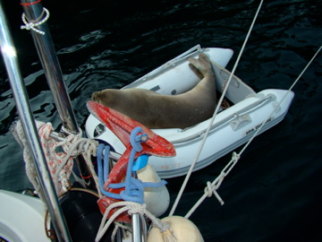

Bir Akdeniz Fokunun Başına Gelenler
Bana ‘hayatta ne olmak istemezsin?’ diye sorsalar cevabım ’21. yüzyılda soyu tükenmekte olan ve insanlar tarafından korunmaya alınmış bir tür’ şeklinde olurdu.
Belki hepiniz duymuşsunuzdur. Bundan bir süre önce Didim’de yaralı yavru bir fok bulunmuştu. SAD-AFAG isimli dernek yavru foku iyileştirip tekrar doğaya salmak üzere girişimde bulundu. Amaç, fokun kendisini toparlayabilmesi ve yavru bir fokun tek başına doğada varolma şansı olmadığı için tekrar kendine yetebilir hale gelene kadar gözlem altında tutmak idi. Projelerini bir sponsor ve bir çok gönüllü ile gerçekleştirdiler ve zamanı geldiğinde de foku tekrar vahşi doğaya bıraktılar.
Sevgili Prenses sence burada yanlış bir durum var mı? Seni bilmem ama bence yok. Zaten soyu tükenmek üzere olan bu ürkek canlıların yaşayabilmesi, üreyebilmesi doğal yaşam için çok önemli. Ayrıca fokların doğada var olması belli yerlerin dışında başka yerlerin de koruma altına alınması açısından iyi olabilir. Keşke her yer ayrımsız korunsa ama insanlık kendi istatistiklerine, ekonomik değerlerine göre ‘korunacak’lar ve ‘korunmayacak’lar diye bölgelere ayırıyor işgal ettiği toprakları.
Devam edelim;
Haberlere göre fokun bulunduktan sonra tekrar doğaya salınması için yapılacakların mali olarak desteklenmesi gerekiyormuş. Dernek bu konuda deneyimli bir organizasyonla iletişime geçiyor ve Hollanda’dan gelen bir uzman aylar sürecek iyileşme döneminde tecrübelerini aktarıyor. Türkiye’de devlet dışı organizasyonların durumu ortada. Yapılacak çalışmaların ihityacı olan para kolay bulunmuyor. Dolayısıyla bu süreci destekleyecek bir sponsor bulunuyor. Benim gözümde burada işler biraz karışmaya başlamakla beraber esas anlatmak istediğim bu değil.
Bu yazıda anlatmak istemediğim nokta ise Türkiye’de doğanın kirlenmesinde, ekolojistlerin, çevrecilerin radikal duruşlarını sulandırmakta en büyük katkıyı yapanlardan biri olan Koç Holding’ten Mustafa Koç, Badem isimli foka sponsor oluyor. Bir yandan ne kadar çevre dostu olduğunu gösterirken bir yandan da fabrikaları ve kendi güdümündeki çevre dernekleri bir şekilde çalışmaya devam ediyor. Bununla beraber fokun rehabilitasyon süreci, sponsorun meşruluğu, rehabilitasyon yöntemleri tartışmaya açık olmakla beraber bunu başka bir yazıya bırakıyorum.
Yöntemlerin doğruluğu yanlışlığı insanoğlu tarafından tartışıla dursun bu arada fokun başına gelenleri kendi penceremden anlatmak istiyorum.
Bir fokun hayatını tek başına geçirebilmesi için yapılan iyi niyetli çalışmalar, diğer insanlar tarafından nasıl bozulur? Neden bir kısım insanoğlu bir yandan vahşi güdüleri olan bir canlıyı tekrar yabana kavuşturmak isterken, diğer kısım insanoğlu bu hayvandan kurtulmaya çalışır? İkinci kısım insanoğlu içimi çok acıtıyor. Ve ne yapabileceğimi bilemiyorum. Şu anda çiftleşmek üzere doğada olması gereken Badem insanoğlunun zulmünden korunmak için diğer iyi niyetli insanlar tarafından kapatıldığı bir kafesin içinde yaşıyor. Yaşamak zorunda bırakılıyor.
Badem Kafeste
FOKUN BAŞINA GELENLER
2008 yılında tanıştım Badem ile. Serbest kaldığı dönemde benimde yaşadığım köyün sahiline gelip büyük teknelere ait ufak servis botlarının içine girip uyuyordu. Sahilde güneşlenenlerin yanına uyumaya gelip milleti korkutuyordu. Bir fokun insanların yanına bu kadar girmesi hiç normal değildir. Ürkektir ve insanların olduğu yerlerde yaşamayı tercih etmez. Durumu farklı kılan şey geçirdiği rehabilitasyon süreci olmalı. Burada insanlara bir nebze alışmış olmalı ki daha bebek olduğu için insanlardan bir zarar gelebileceğini düşünmüyordu. Bizim bulunduğumuz yerde çocuklarla oynuyor, tam bir çocuk gibi şirinlikler yapıyordu. Bu işin eğlenceli kısmı seyirlik bir olaydı ve çocukların ona karşı ilgisi gerçekten görülmeye değerdi.
Bir iki gün bizim koyda takıldıktan sonra bir anda yokoluyor ve alakasız bir yerden tekrar haberlerini alıyorduk. Gitmiş başka bir koyda başka bir teknenin botunda uyumuş veya sahilde güneşlenenlerin yanında güneşlenmiş. Bütün bunları gözlemlerken bir yandan da gazete ve televizyonlarda dernek tarafından şu açıklamalar yapılıyordu: ‘Badem’e yaklaşmayın, beslemeyin, oynamayın’.
Neden mi?
Tabii ki Badem insanlara alışmasın ve doğadaki diğer canlılar gibi tek başına ayakta kalabilsin, yaşı geldiğinde kendine bir erkek bulsun ve yavruları olsun diye.
Benim penceremden ise olaylar şöyle gelişti; Bi keresinde Badem bir kayık bulmuş, içinde uyuyor. Kayığın ait olduğu guletin gemicisi ise elindeki kürekle Badem’i dürterek çıkartmaya çalışıyor. Bu arada Badem 100 kilonun üzerinde bir fok. Öyle ittirmeyle kaktırmayla yerinden kıpırdamadığı için gemici arkadaş hayvanı ciddi ciddi dürtmekte. Elinde sopalı gemici ile aramdaki konuşma yaklaşık olara şöyle geçti;
– Abicim sen n’apıyorsun? Yazık değil mi hayvana?
– Botta yatıyor?
– Bota ihtiyacın var mı?
– Hayır
– İçinde yapacağın birşey var mı?
– Hayır
– E bırak yatsın o zaman sonra çıkar gider.
– Ama turistleri ısırıyor.
– ISIRSIN O ZAMAN. BURASI ONUN EVİ dedim bağırarak ve uzaklaştım. Çünkü konuşurken bile bir yandan dürtmeye çalışıyordu.
Badem'den korkmuş insancıklar
Bir yandan heryerde hayvana yaklaşmayın, rahatsız etmeyin diye uyarıyorlar. Bir yandan da hayvanı ‘turistleri ısırır’ gerekçesiyle birileri kürekliyor. Sonradan bu diyaloğu düşündükçe adama hep şunu demek istedim: ‘Be adam. Kaç tane şanslı adamın teknesinin botuna fok girip yatar. Turistler zaten bu doğal güzellikler için gelmiyorlar mı?’ Ama diyemedim bir türlü adamın şiddeti beni de ona şiddet uygulamaya itti. Hep sakin olmak lazım esasında. Sakin ve anlayışlı.
Şimdi anlattığım olayda hata nerede? Varsayalım gemici adam cahil. Denizden anlamıyor sadece ne iş verilirse onu yapıyor. Okumuyor, araştırmıyor bilmiyor. Ya bunun kaptanı? Guleti çalıştıran ve buraların doğal güzelliklerinden paralar kazanan sahipleri? Ya peki hayatını denizden kazananlar, deniz kenarında yaşayanlar, tekne sahipleri, uzaktan yakından denizle alakası olan insanlar? Ooooffff of…
Deniz ürünlerinden biri olan ahtapot hepimizin peşinde koşturduğu pek leziz bir hayvan. Bazen günlerce avlamak için peşinde koştuğumuz oluyor. Çok lezzetli ve besleyici. Tabii ki fokların da ana yiyeceklerinden biri. Bizim beslenme ihtiyacımız temelinde olmayan ama foklar için önemli bir besin kaynağı. Kişisel sohbetlerimizde birçok balıkçı veya balık tutmaya meraklı kişi Badem’in yediği ahtapotlardan şikayetçi olduğunu söyledi. ‘Ahtapotları bitiriyormuş’ Yanlış okumadınız. Bir deniz canlısının varlığı diğer deniz canlısını bitirmesinin nedeni imiş. Bu cahillik mi? Ne olduğunu bilemiyorum ama benim mantığımın oldukça dışında ve açıklanması zor bir durum. Hatta balık tutmaya meraklı birisi yaptığımız bir sohbet sırasında Badem’in balıkçılar tarafından öldürülmemesinin esasında buralarda yaşayanların ne kadar sabırlı olduğunu gösterdiğini söylemişti. Kesinlikle haklıydı ama bu durum esasında acıklıydı. Çünkü burada sabır gösterilecek şey Badem değil. Deniz yaşamını tehdit eden ve balıkların kökünü kurutan diğer etkenler söz konusuydu. Genel olarak bunlar yeterince konuşulmuyordu çünkü savunmasız bir hayvanı suçlamak en kolayı idi.
150kg bir vahşi hayvanla oynamaya çalışan bir insancık
Bu arada Badem’in kafeste olmadığı bir zamanda gittiği bir yerlerde fena halde dövüldüğü haberini okudum. Pek yapacak birşey yoktu. Kimsenin foku korumak için ayaklandığı falan yoktu. Etrafta yol genişletme için kesilen yüzlerce ağaç vardı, madencilere ormanda maden arama için verilen izinler vardı, onlarca kömürlü santral çalışmaya devam ediyor ve kimse ayaklanmıyordu. Neden bir fok için insanlar tepki göstersinler ki?
Dövülme kadar trajik ama sonuçları itibariyle beni gülmekten sinir krizine sokan haberlerden biri de Badem’in gittiği bir köyde belediye hoparlörlerinden yapılan anons idi. Badem’in tam bayram zamanına denk getirdiği ziyaret sırasında belediye hoparlörlerinden halkın Badem’i görmek için sahile davet edilmesi benim için insanlığın gerçekten ciddi anlamda yardıma ihtiyacı olduğunu düşündürtüyor. Bir fok ile bayramlaşmak haberini okursanız ne demek istediğimi daha iyi anlayabilirsiniz. Bu turistler için buram buram reklam kokan hareketin doğuracağı sonuçların hesaplanmamasının tahmin edileceği gibi, ne Badem’e ne de bundan çıkar elde etmek isteyenlere faydası var. Badem’in ziyareti ya kurban bayramına denk gelseydi n’olurdu acaba?
Sol gözü kapanmış. Muhtemelen dayak yemiş...
BADEM DÖVÜLMEYİ NASIL HAK ETTİ?
Çiftlik hayvanlarından farklı olarak kendi besinini bulmaya çalışan, yani avlanan bir canlının av olması kadar doğal bir durum yoktur. Doğadaki denge bunun üzerine kurulmuştur. Varlığımız bunun üzerine kuruludur. Ancak avlanan canlı eğer dünyanın efendisi olan homo sapiens ile yolunu kesiştirirse, işte o zaman çeşitli nedenlerle av olabilir. Bu keyif için de olabilir; yani avlanma içgüdüsünün beslenmekten bağımsız olarak tatmin edilmeye çalışması da olabilir.
Badem’in balıkçıların ağını parçalaması -ki burada amaç Badem için birşeyi parçalamak değil. Sadece beslenmek.
Sizi boğmaya veya ısırmaya kalkması -ki uyarıldığınız halde siz 100-150kg vahşi güdülü bir hayvan ile oynamaya kalkarsanız böyle olur.
Sizin yiyemediğiniz ahtapotları onun yemesi -ki hayvan yanına bir de rakı açmıyor. Sadece karnını doyurmak istiyor.
Gelip sizin teknenizde izin almadan yatıyor olması -ki hayvan bebekken insanlar tarafından yaşama döndürüldüğü için onlardan zarar gelmeyeceğini sanıyor.
BADEM’İ JANDARMA KORUMASINA ALMAK
Doğa’da her canlının bir üstü vardır. Özetle; ‘büyük balık küçük balığı yutar’. Küçük balığın etrafında ona göz kulak olan korumaları yoktur. Karada ve denizde tüm canlılar için durum böyledir. Yavruyken bile anne sakat ya da gelişmemiş yavrusuna fazla göz kulak olmaz onu doğanın insafına yani kendinden daha büyük bir türe yem olarak bırakır. Böylece doğa sürekli bir denge için de olur. Badem’in neden ailesi tarafından terk edildiğini bilmiyoruz ama her yavru gibi onun da belli bir yaşa kadar korunması gerekiyordu. Erişkin hale gelip artık kendi başının çaresine bakmaya başladığı zaman korunmasına gerek kalmayacaktı ama insan bileşeni doğanın tüm dengesini bu ufak olayda bile altüst etmeye devam ediyor. Nedeni anlaşılamayacak şekilde Badem’i zıpkınlamaktan söz eden bir insana engel olmak için Badem’in rahat uyuyabilmesi için başına silahlı jandarmalar dikiyor. Bu adam elini kolunu sallayarak hayatına devam edebilirken, Badem bu anlayış yüzünden hayatına bir kafesin içinde devam ediyor. İşte konu ile ilgili haber. Haberde adı geçen Murat Sert adlı vatandaşa acil şifalar diliyorum.
‘Buna bir ders verelim’ deyip hayvanın gözünü morartmak sadece insanın yapabileceği birşey ve bu bağlamda gayet mantıklı. Fok bir hayvan ve haddini bilmesi lazım. Onun atalarının insanoğlunun var olmadığı zamanlarda bile yaşıyor olması ve onun buradan insanoğlu yüzünden göç etmiş olması tamamen insanların işgalci, saygısız ve burnu kalkıklığından kaynaklanıyor. Dolayısıyla haddini aştığı an haddinin bildirilmesi gerekir. Dövmek ve acı vermek terbiye etmenin iyi bir yolu. ‘Ağıma dokunursan ben de seni döverim hatta öldürürüm’. Öte yandan bir başka insanoğlu ise diğerlerinin şerrinden korumak için onu kafese kapatıyor. Kafesin masrafları ise esasında insanların böyle burnu kalkık yaşayacağı sistemi destekleyen ve onlar ile varolan ‘cicibaba’lar tarafından karşılanıyor. Konusu olmadığı için değinmekten kaçındığım ama söz etmeden geçemeyeceğim son nokta ise; foku hayata döndürdüğü için şükredilmesi veya teşekkür edilmesi gerekenin kesinlikle sponsor değil, bu işe emeği geçenlerin olmasıdır. Kanımca Badem’e gelecekte n’olursa olsun bu işten karlı çıkan her zaman ki gibi sistemi yaşatanlar olacak. Doğaseverler ve benim gibi olayı gözlemleyenlerin ise sadece içi acımaya devam edecek. Hayatında doğal yaşam türlerini doğal ortamlarında değil de kafesler içinde, tel örgülerle çevrilmiş hayvanat bahçelerinde gören insanlar ve onların çocukları tabi ki kendini doğanın efendisi olarak görüp onları korumaya ya da korumamaya karar verecektir.


{kind=link}
{kind=link}
{kind=link}
{kind=link}
sadece teşekkürler keşke daha geniş kitlelere ulaşabilse!
Çocukluğumda götürüldüğüme emin olduğum, ama sanırım bilinçaltımın hatırlamayı reddettiği hayvanat bahçelerini saymazsak, kafeste tutulan ve evcil olmayan hiçbir hayvanı görmeye para vermedim. Doğasından koparılmış her tür; oyun havuzlarındaki yunuslar, kafeslerde yatıştırıcı verilerek bayıltılmış, sirklerde dayak zoruyla eğitilmiş ‘vahşi’ hayvanlar, devasa akvaryumlara tıkılmış balıklar bile modern görünümlü şehir insanının sınır tanımaz eğlence! anlayışından, şımarıklığından ve tabii ki para hırsından dolayı oradalar. Toprakla ve doğayla bağını site bahçesindeki ağaçlar, ekili laleler ve havuzdaki kazlar olarak tanımlayan, köpeğinin cinsini de karşı cinsi tavlamak için kullanan bu insanlardan başka ne beklenebilirdi ki ?
Kendi ortamında, ki biz buna ‘vahşi’ diyoruz, içgüdüleri ve kendilerine özgü kurallarıyla yaşayan hayvanları anlamaya çalışmaktansa maymuna çevirenlerin de, halihazırda başkalarının maymunu olduğunu düşünmekten kendimi alamıyorum. Patron müdürü azarlar, o da altındakini ve en alta gelindiğinde anne/baba evde çocuğunu azarlar. Zincirin son halkası çocuk, varsa kardeşini yoksa sokaktaki kediyi, köpeği, kuşu hırpalar. Şimdi ‘vahşi’yi içimizden tekrar tanımlayalım.
insan olarak, ‘büyük balık küçük balığı yer’ sözündeki yerimizin ‘büyük balık’ olmadığını algılamamız da, bu konuya müdahil olunmaması gerektiğini anlamamız da hayli vakit alacak gibi.
http://video.ntvmsnbc.com/cevre-felaketi-buyuyor-2.html#foku-kursuna-dizdiler.html
yazini okudugum gunun ertesi bununla karsilastim..buyur burdan yak..beni yak kendini yak herseyi yak insancik…
Son Gelişmeler;
http://www.radikal.com.tr/Radikal.aspx?aType=RadikalDetay&ArticleID=1033134&Date=19.12.2010&CategoryID=79